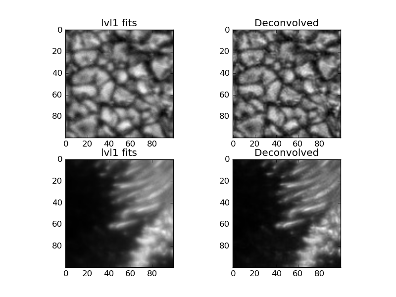

PSF (point spread function) nam govori o nepravilnostima u optičkom sistemu. Optički savršen sistem ima neki difrakcioni limit i strukture koje su manje od toga ne može da razluči. Naravno, ni jedan sistem nije optički savršen tako da dolazi do raznih aberacija unutar samog sistema koje utiču na kvalitet slike. PSF nam govori o tim aberacijama. U principu, nemoguće je odrediti PSF teleskopa ali je moguće "nagađati" tu funkciju i zatim redukovati snimke metodom dekonvolucije.
PSF HINODE teleskopa je određena u ovom radu tako što su posmatrali tranzit Merkura. Predpostavili su da ako bi tranzit bio posmatran optički savršenim teleskopom, intenzitet piksela na površini Merkura bi bio zanemarljivo mali u odnosu na intenzitet piksela na kojima je Sunčeva površina. Na osnovu te predpostavke napravili su funkciju koja se sastoji iz 4 gausijana i testirali su je tako da se metodom dekonvolucije dobije nešto najpriblišnije predpostavci.
Prva funkcija stvara PSF (2d matricu intenziteta).
Dok druga funkcija/procedura(zapravo) radi dekonvoluciju metodom max_likelihood ili max_entropy (iz nekog razloga ne radi) i za input parametre traži put do slike koju želimo da "sredimo", broj iteracija (za max_likelihood (~30), u kom filteru je slika i tip dekonvolucije.
Preporucujem da se procita docstring zato sto ima calling example i sve je lepo komentarisano. Mrzi me da pišem zato što je sve u fajlu.
Fajl možete skinuti ovde.
Rezultat: RMS (Root Mean Square) sa 0.0799 na 0.0971 za blue continum
Još uvek nisam uradio za ostale filtere (račun za RMS) ali smatram da je najmanja "dobit" za blue continuum snimke zato što su najoštriji. Najveće poboljšanje se očekuje kod red continuum snimaka zato što imaju najširi PSF.